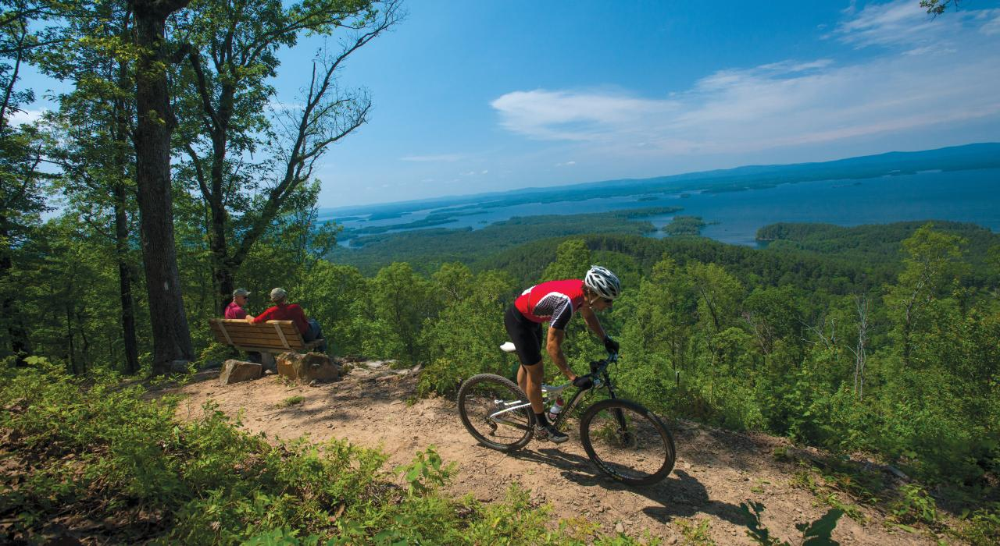
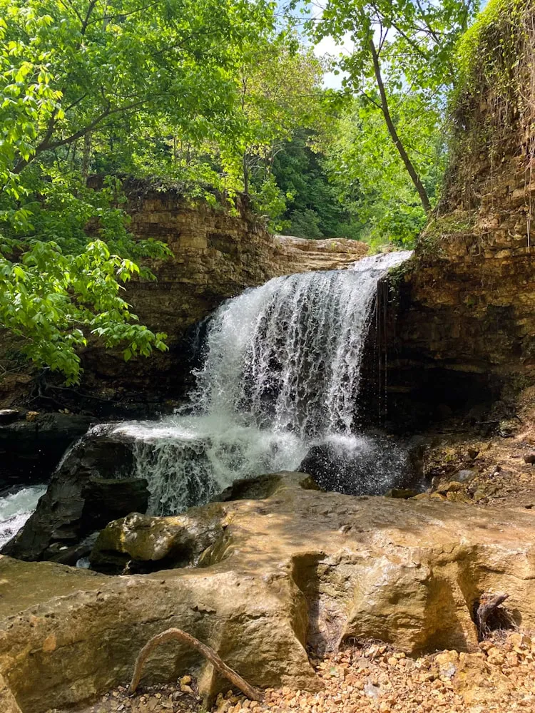
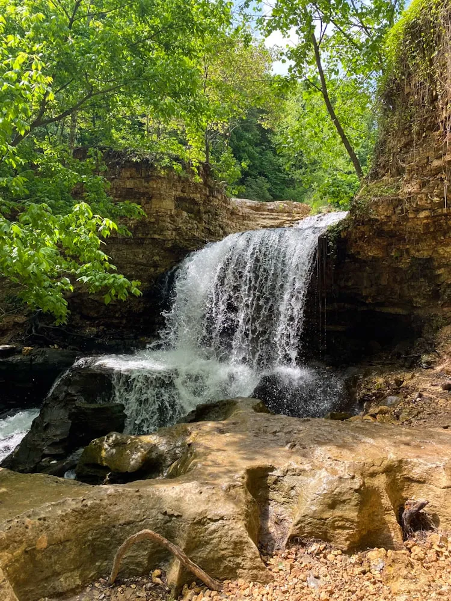

Explore Arkansas
Hiking and Biking on Long-distance Trails
Whether by two feet or two wheels, trekking the trails of Arkansas is a must. Stretching from Fayetteville to Bentonville in northwest Arkansas, the Razorback Regional Greenway offers 58 kilometers of mostly off-road trail with convenient access to amenities and attractions. The Arkansas River Trail is a 142-kilometer loop that connects 38 parks and six museums in central Arkansas. It also includes equestrian trails and scenic routes along the Arkansas River. Mountain bikers will find loads of challenging single-track.
View Options AboutExploring National Rivers and Forests
 

Fun on the water is a given in Arkansas, where more than 15,000 kilometers of rivers and hundreds of lakes offer recreation from relaxed to adventurous. At Buffalo National River, the USA’s first National River, go kayaking amid forested hills and towering rock faces at one of the few undammed rivers in the lower 48 states. Look for migratory birds, black bear, deer, beavers and other wildlife at Dale Bumpers White River National Wildlife Refuge.
About Us ContactCast a line for catfish and bass in the Mississippi River at St. Francis National Forest.